01Besoins et choix de la solution
Sur la maquette RIOCA, le domaine RIOCA.local et ses postes existaient déjà, mais il n'y avait nulle part où ranger les fichiers. La mission 7 demande un NAS sur un serveur physique, avec un stockage en RAID 1, joint au domaine et proposant quatre partages :
| Partage | Usage | Droits demandés |
|---|---|---|
| Dossiers personnels | Un dossier par utilisateur | L'utilisateur est propriétaire de son dossier, les admins du domaine ont le contrôle total |
| Collaboratif | Un dossier par service | Le groupe du service en lecture et écriture, les admins en contrôle total |
| Outils | Installeurs des logiciels | Tout le monde en lecture, les admins en contrôle total |
| Sauvegardes | Sauvegardes des systèmes | Les admins du domaine seulement |
Nous avons comparé trois solutions :
| Critère | TrueNAS Community Edition | OpenMediaVault | Windows Server |
|---|---|---|---|
| Licence | Gratuit, open source | Gratuit, open source | Payant (licence serveur et licences d'accès) |
| Jonction à l'AD | Depuis l'interface web | Manuelle (Samba, winbind) | Native |
| Partages et ACL | SMB et éditeur d'ACL de type Windows | SMB, ACL limitées | Partages et ACL NTFS |
| Instantanés | Instantanés ZFS planifiables | Par des extensions | VSS, sauvegarde Windows Server |
Nous avons retenu TrueNAS Community Edition 25.10.7 : un système fait pour le stockage, gratuit, qui rejoint le domaine et gère des ACL de type Windows depuis son interface. Le serveur (Xeon E-2124, 15 Go de mémoire ECC) dépasse largement ses prérequis. Windows Server a été écarté parce qu'il est payant et généraliste, OpenMediaVault parce que la jonction à l'AD n'y est pas intégrée.
La mission 8 s'appuie ensuite sur ce NAS : des GPO montent les lecteurs réseau, imposent le fond d'écran, bloquent le panneau de configuration et installent Firefox et VLC sur les postes.
02RAID 1 et stockage
TrueNAS a été installé depuis une clé USB (préparée avec Rufus, en GPT et UEFI) sur le SSD de 240 Go. Le nom d'hôte est srv-nas-3, avec une adresse fixe dans le VLAN des serveurs. Le contrôleur de domaine lui sert à la fois de serveur DNS et de serveur de temps.
Le serveur a deux disques SATA de 1 To. Pour le RAID 1, TrueNAS conseille un miroir ZFS, mais l'enseignant nous a demandé d'utiliser le RAID matériel du contrôleur Dell PERC H330 : dans son utilitaire, les deux disques forment un disque virtuel en RAID 1 de 931 Go. TrueNAS ne voit alors qu'un seul disque, et c'est le contrôleur qui gère le miroir.
Le volume pool-nas a donc été créé sur ce disque unique, sans redondance ZFS, puisqu'elle est déjà assurée par le contrôleur. Il offre 899 Go utiles.

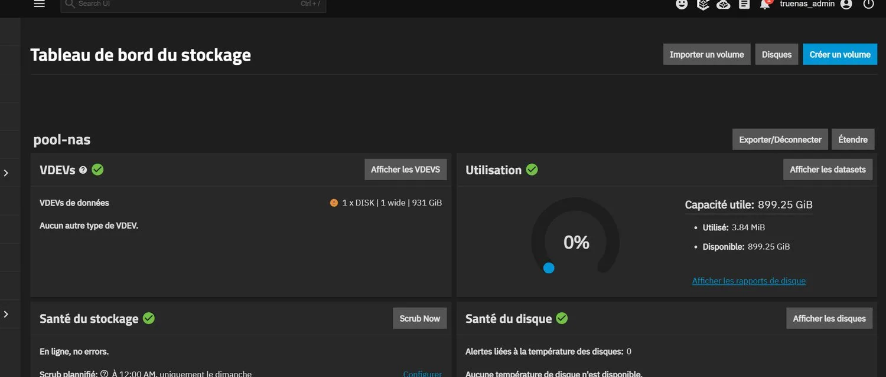
03Jonction au domaine
Dans « Identifiants », puis « Services d'annuaire », le NAS a été joint au domaine RIOCA.local avec un compte administrateur du domaine. TrueNAS lit alors les utilisateurs et les groupes de l'AD, et on peut s'en servir directement dans les ACL.

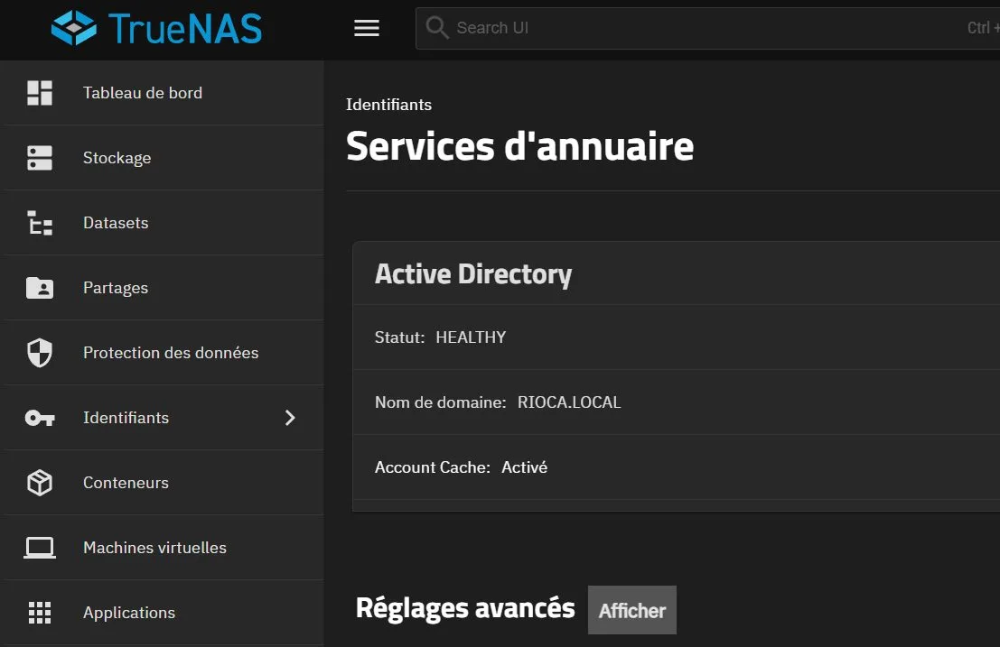
Cette jonction a d'abord été refusée à cause de l'heure du serveur : la partie 7 raconte comment je l'ai trouvé.
04Partages et droits
Un dataset a été créé pour chaque partage, avec le préréglage SMB, et un sous-dataset par service dans collaboratif (compta, dirrh, fabric, garage, it, livr, rd). Les droits appliqués dans l'éditeur d'ACL :
| Dataset | Admins du domaine | Autres droits |
|---|---|---|
| sauvegardes | Contrôle total | Aucun |
| outils | Contrôle total | Utilisateurs et ordinateurs du domaine : lecture |
| collaboratif | Contrôle total | Utilisateurs du domaine : lecture, sans héritage |
| collaboratif/<service> | Contrôle total | Groupe du service : modifier (lecture et écriture) |
| personnels | Contrôle total | Utilisateurs du domaine : lecture, sans héritage |
| personnels/<utilisateur> | Contrôle total | L'utilisateur : propriétaire, contrôle total |
Deux choix méritent une explication :
- à la racine de collaboratif et personnels, les utilisateurs ont la lecture sans héritage : ils peuvent ouvrir le partage, sans obtenir de droits dans les dossiers des autres ;
- les ordinateurs du domaine lisent outils, car l'installation des logiciels par GPO se fait avec le compte de l'ordinateur, avant toute ouverture de session.

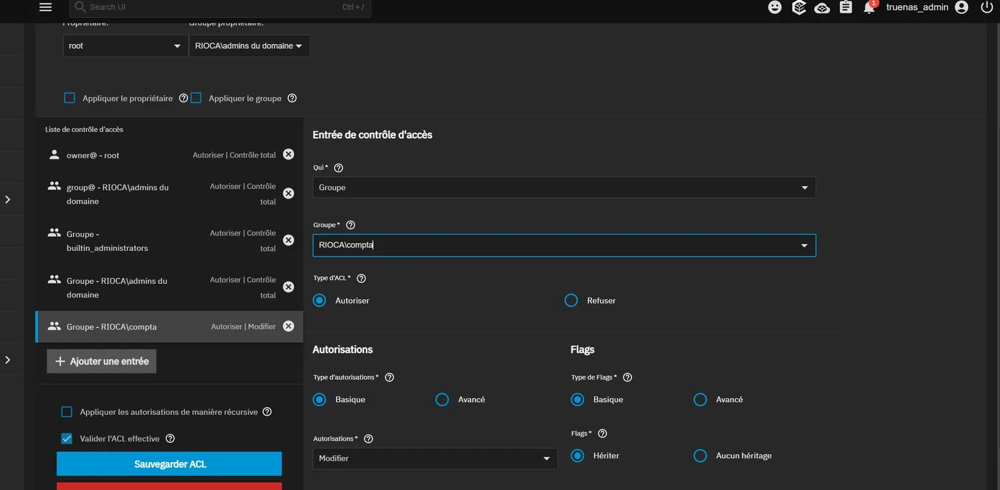

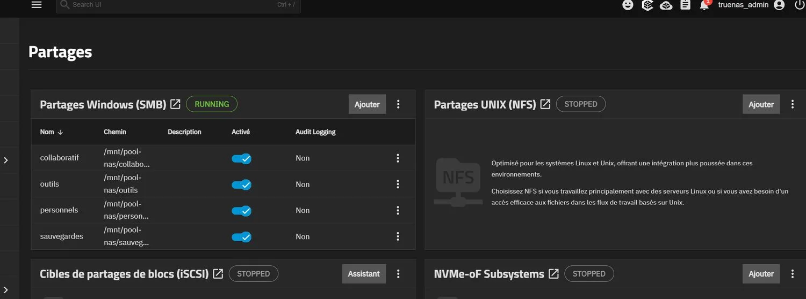
Les partages ont l'option « Access Based Share Enumeration » : un utilisateur ne voit que les dossiers auxquels il a accès. La même ACL que celle de la compta a été appliquée aux six autres services, chacun avec son groupe.
Dossiers personnels. Dans « Utilisateurs et ordinateurs Active Directory », le dossier de base des utilisateurs de chaque unité d'organisation pointe vers \\srv-nas-3\personnels\%username%, ce qui crée leur dossier automatiquement. Chaque utilisateur a ensuite été rendu propriétaire de son dossier, depuis le shell du NAS :
for d in /mnt/pool-nas/personnels/*/; do sudo chown "RIOCA\\$(basename "$d")" "$d"; done05Les GPO
Avant de créer les GPO, nous avons vérifié la maquette : le poste de test est joint au domaine, dans l'unité d'organisation des PC, il reçoit son adresse en DHCP, utilise le contrôleur de domaine comme DNS, et gpresult /r montre qu'un utilisateur du service Compta reçoit bien les stratégies du contrôleur. Les GPO sont liées à deux unités d'organisation : les PC pour les réglages de l'ordinateur, les utilisateurs pour les autres.
| GPO | Liée à | Chemin du paramètre |
|---|---|---|
| Mappage du dossier personnel | Utilisateurs | Configuration utilisateur → Préférences → Paramètres Windows → Mappages de lecteurs : P: vers \\srv-nas-3\personnels\%LogonUser% |
| Une GPO par service (Dossier Compta…) | Unité de chaque service | Même emplacement : T: vers le dossier du service dans collaboratif |
| Fond d'écran | Utilisateurs | Préférences → Fichiers (copie de l'image), puis Modèles d'administration → Bureau → Papier peint du Bureau |
| Panneau de configuration interdit | Utilisateurs | Modèles d'administration → Panneau de configuration → Interdire l'accès au Panneau de configuration et à l'application Paramètres du PC |
| Déploiement de Firefox, de VLC | PC | Configuration ordinateur → Paramètres du logiciel → Installation de logiciel (package attribué) |
| Attente réseau | PC | Modèles d'administration → Système → Ouverture de session → Toujours attendre le réseau lors du démarrage et de l'ouverture de session |

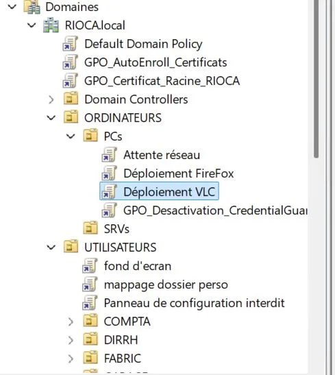

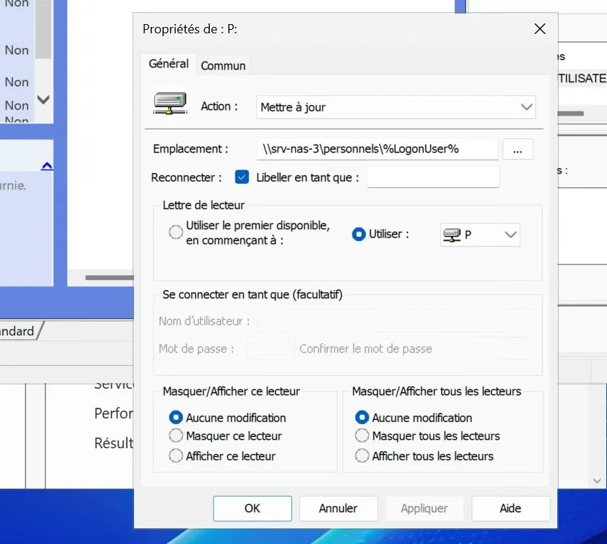
Lecteurs réseau. Le lecteur P: utilise la variable %LogonUser% : une seule GPO donne à chacun son propre dossier. Le lecteur T: dépend du service : il y a donc une GPO par service, liée à l'unité d'organisation du service.
Fond d'écran. L'image est rangée dans le partage outils. Une préférence « Fichiers » la copie sur le poste, dans C:\Windows\Web\Wallpaper, puis le paramètre « Papier peint du Bureau » l'applique depuis cette copie locale. Ce paramètre empêche aussi l'utilisateur de changer de fond.
Panneau de configuration. Le blocage ne doit pas gêner les administrateurs. Dans l'onglet « Délégation » de la GPO, l'autorisation « Appliquer la stratégie de groupe » est refusée aux Admins du domaine.

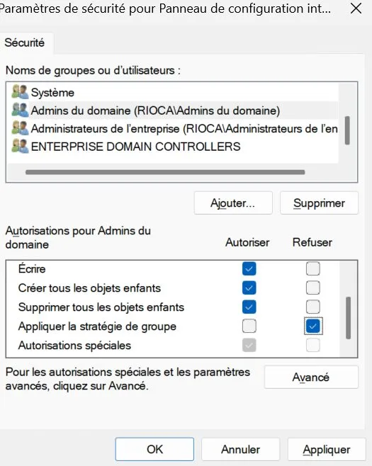
Firefox et VLC. Les installeurs MSI sont dans le partage outils, appelés par leur chemin réseau (UNC) et attribués aux ordinateurs. L'installation se fait au démarrage du poste, avant l'ouverture de session. La GPO « Attente réseau » oblige Windows à attendre le réseau avant d'appliquer les stratégies, sans quoi l'installation n'a pas lieu.
Question posée dans la mission : que fait gpupdate /force ? Il réapplique les stratégies tout de suite, sans attendre le rafraîchissement automatique (environ 90 minutes). Mais il n'installe pas un logiciel attribué à l'ordinateur : l'installation ne se fait qu'au démarrage, et la commande demande de redémarrer.
06Tests
Les tests ont été faits sur le poste client avec un utilisateur standard du service Compta, puis avec un compte administrateur du domaine.
| Test | Résultat attendu | Résultat obtenu |
|---|---|---|
| L'utilisateur de la Compta ouvre collaboratif | Seul le dossier compta est visible | Conforme (fig. 8) |
| Il crée un fichier dans collaboratif\compta | Écriture autorisée | Conforme |
| Il ouvre le dossier personnel d'un autre utilisateur | Accès refusé | Conforme (fig. 9) |
| Il crée un fichier dans outils | Écriture refusée (lecture seule) | Conforme |
| Il ouvre sauvegardes | Accès refusé | Conforme |
| Un admin du domaine ouvre collaboratif | Les 7 dossiers des services sont visibles | Conforme |
| Lecteurs réseau à l'ouverture de session | P: (dossier personnel) et T: (Compta) | Conforme (fig. 10) |
| Un utilisateur du service IT se connecte | Il reçoit le lecteur de l'IT, pas celui de la Compta | Conforme |
| Fond d'écran | Fond de RIOCA affiché, réglage de l'arrière-plan grisé | Conforme |
| Panneau de configuration | Bloqué pour l'utilisateur standard, accessible pour un admin | Conforme (fig. 11) |
| Firefox et VLC après redémarrage | Installés automatiquement au démarrage | Conforme (fig. 12) |

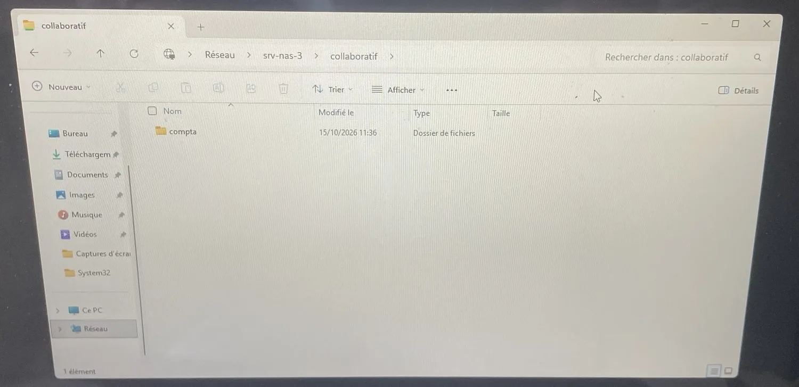

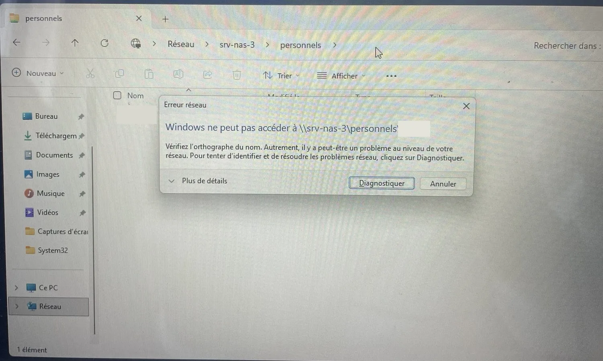

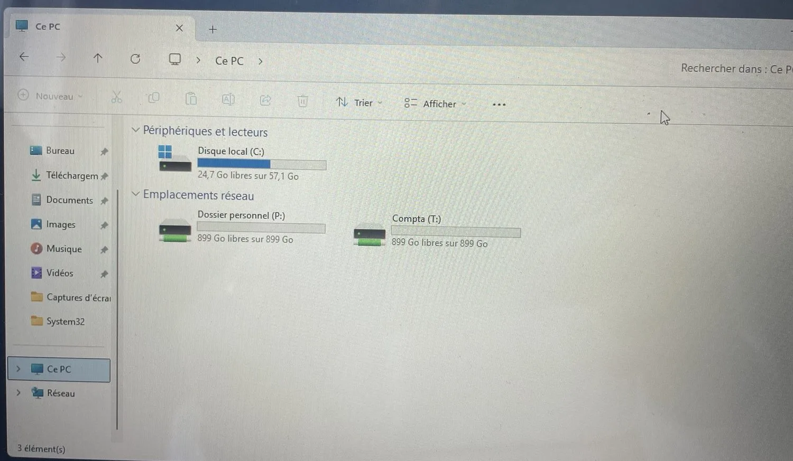

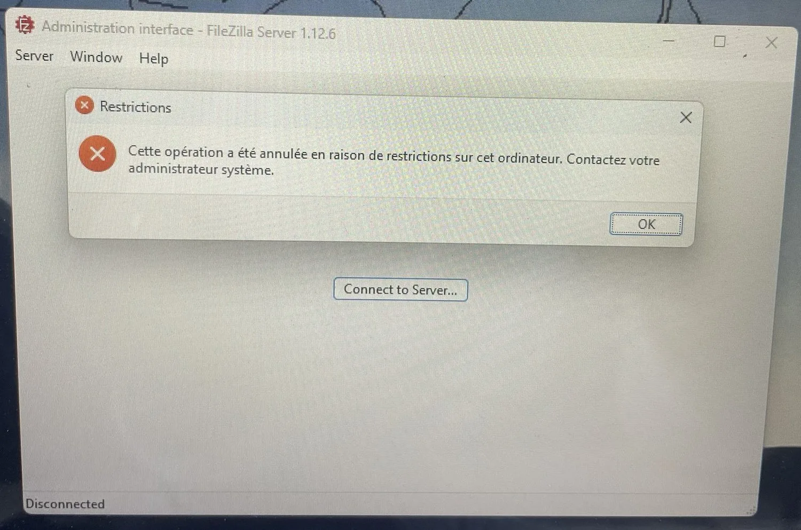

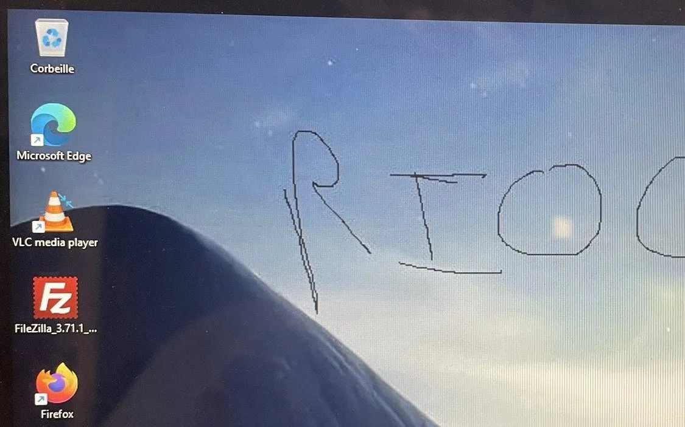
07Difficultés rencontrées
L'heure du NAS empêchait la jonction au domaine. TrueNAS refusait de joindre le domaine, avec l'erreur NT_STATUS_DOMAIN_CONTROLLER_NOT_FOUND. La commande timedatectl a montré la cause : le serveur se croyait en 2025, et son horloge matérielle en 2098. Or Kerberos, qu'utilise l'Active Directory, refuse un écart de plus de 5 minutes avec le contrôleur de domaine. J'ai remis l'heure dans le BIOS (en UTC) et réglé le NAS pour se synchroniser sur le contrôleur. Côté contrôleur, il a fallu le déclarer source de temps fiable (w32tm /config /reliable:yes), ouvrir le port UDP 123 et couper sa synchronisation sur l'hôte Hyper-V pour qu'il réponde correctement.

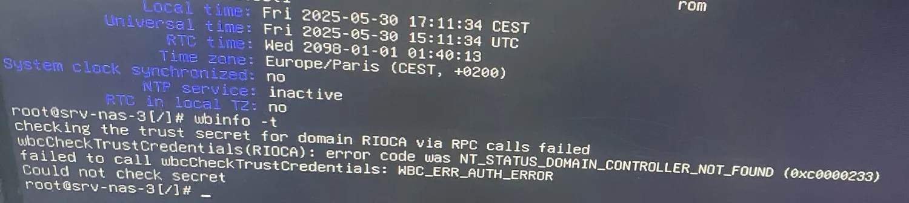
Les disques n'étaient pas détectés. Au départ, TrueNAS ne voyait que le SSD : les deux disques de données étaient bloqués par une ancienne configuration du contrôleur PERC. Je les ai réinitialisés dans l'utilitaire du contrôleur avant de créer le disque virtuel RAID 1.
Le lecteur P: ne se montait pas. Avec le seul droit « Traverser » à la racine de collaboratif et personnels, Windows refusait d'ouvrir le partage (accès refusé dans le journal Application). Passer à « Lire », sans héritage, a réglé le problème sans donner accès aux dossiers des autres.
Une GPO n'était pas appliquée. La GPO du dossier personnel n'apparaissait pas dans gpresult : sa version était à 0 dans l'Active Directory et à 4 dans SYSVOL. Une nouvelle modification de la GPO a remis les deux versions d'accord.
Firefox et VLC ne s'installaient pas. Windows demandait un redémarrage à chaque fois, sans rien installer. Le journal Système montrait au démarrage l'événement 1129 : pas de connexion au contrôleur de domaine. La cause venait d'un autre TP : le port du poste est protégé par le 802.1X, qui authentifie l'utilisateur. Le port reste fermé tant que personne ne s'est connecté, alors que l'installation se fait justement avant l'ouverture de session. Pour ne pas toucher à la configuration RADIUS, nous avons fait l'installation en branchant le poste sur un port sans 802.1X. Le poste était réglé en authentification de l'utilisateur seule ; avec EAP-TLS en mode ordinateur (voir 802.1X), il aurait le réseau dès le démarrage.

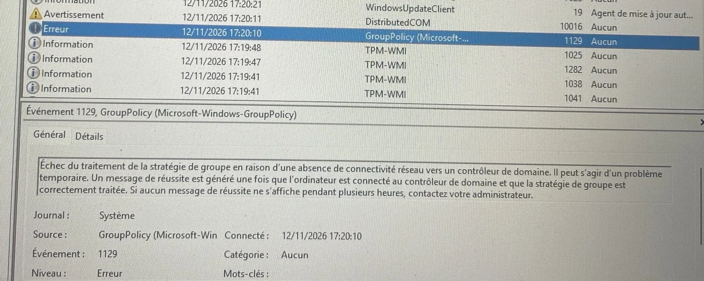
08Bilan et améliorations
Le serveur srv-nas-3 fonctionne : TrueNAS tourne sur un RAID 1 matériel de 899 Go utiles, il est joint au domaine et synchronisé sur le contrôleur. Les quatre partages respectent les droits demandés, ce que montrent les tests d'accès autorisés et refusés. Les GPO montent les lecteurs, imposent le fond d'écran, bloquent le panneau de configuration pour les utilisateurs standard et installent Firefox et VLC.
Les améliorations proposées :
- régler les postes en EAP-TLS en mode ordinateur, comme dans le TP 802.1X, pour que les logiciels s'installent sans changer de port ;
- planifier des instantanés ZFS et des sauvegardes vers le partage sauvegardes.
Ce que j'en retiens : dans un domaine Active Directory, l'heure et le DNS passent avant tout le reste. Et quand une GPO ne fait rien, les journaux Windows (Application, Système, gpresult) disent presque toujours pourquoi.